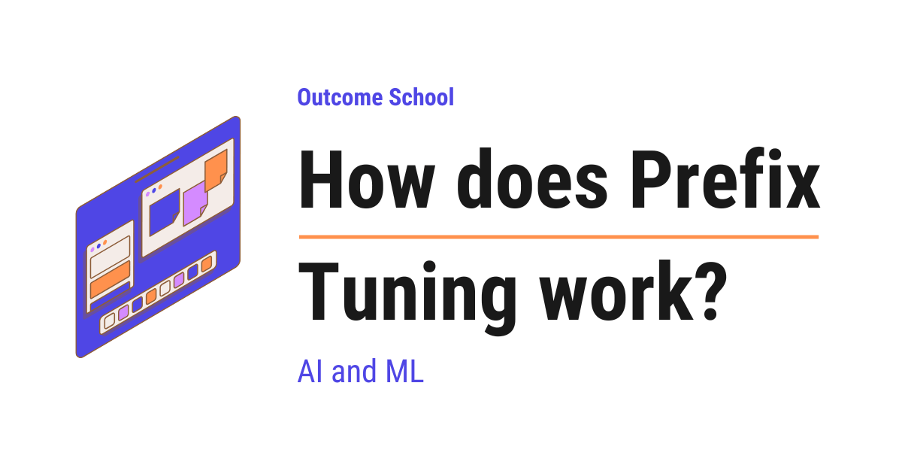

How does Prefix Tuning work?
On this page
- What is a large language model?
- The problem: why full fine-tuning is expensive
- What is Prefix Tuning?
- Prefix Tuning = Prefix + Tuning
- How does Prefix Tuning work?
- The prefix is not real words
- Where the prefix is added
- How the prefix is trained
- How small is the prefix really?
- A simple code example
- Prefix Tuning vs Full Fine-Tuning
- Prefix Tuning vs Prompt Tuning
- Advantages of Prefix Tuning
- Limitations of Prefix Tuning
- Where Prefix Tuning is used
- Frequently Asked Questions

Prefix Tuning is a method where we keep the entire large language model frozen and only train a small set of extra numbers, called the prefix, that every layer of the model looks at while it works.
In this blog, we will learn about Prefix Tuning, a cheap way to adapt a large language model to a new task without changing the model itself. It saves memory, saves money, and lets one big model serve many different tasks at once. We will also see why full fine-tuning is so expensive, how the prefix is added and trained without changing the model, how Prefix Tuning differs from full fine-tuning and prompt tuning and when to use which one based on our use case, where it falls short and how it compares with LoRA, and where it is used in the real world.
We will cover the following:
- What is a large language model?
- The problem: why full fine-tuning is expensive
- What is Prefix Tuning?
- Prefix Tuning = Prefix + Tuning
- How does Prefix Tuning work?
- The prefix is not real words
- Where the prefix is added
- How the prefix is trained
- How small is the prefix really?
- A simple code example
- Prefix Tuning vs Full Fine-Tuning
- Prefix Tuning vs Prompt Tuning
- Advantages of Prefix Tuning
- Limitations of Prefix Tuning
- Where Prefix Tuning is used
Let's get started.
What is a large language model?
Before jumping into Prefix Tuning, we must know what a large language model is.
A large language model, also called an LLM, is an AI model that has read a huge amount of text and learned to predict the next word.
In simple words, it is a system that understands and writes human language. Tools like ChatGPT, Claude, and Gemini are all built on large language models.
The model has learned its skills by adjusting billions of internal numbers. We call these numbers the parameters, or the weights. These numbers are the model's brain. They hold everything the model knows.
So, remember this one idea. A large language model is just a giant collection of numbers that together know how to handle language. Keep this "giant collection of numbers" picture in mind, because it will help us in the next section.
The problem: why full fine-tuning is expensive
Now, let's understand the problem that Prefix Tuning solves.
Suppose we have a big model, and we want it to become very good at one specific task. For example, we want it to write polite customer support replies. The model is already good at general language, but we want to specialize it.
One of the ways to do this is called fine-tuning.
Fine-tuning means we take the trained model and continue training it on our own task, so its parameters get updated for that task.
In simple words, we keep teaching the model with our own examples until it gets good at our task.
But here is the catch. When we do full fine-tuning, we change every single one of the model's parameters. A modern model can have billions of parameters. Changing all of them needs powerful machines, a lot of time, and a lot of money.
And there is a bigger problem. Suppose we have ten different tasks. With full fine-tuning, we get ten full copies of the model, one for each task. Each copy is huge.
Let's picture this problem like below:
Full Fine-Tuning
task 1 ---> [ full model copy 1 ] (billions of numbers)
task 2 ---> [ full model copy 2 ] (billions of numbers)
task 3 ---> [ full model copy 3 ] (billions of numbers)
ten tasks = ten giant copies = huge storage and cost
Here, we can see that every new task forces us to store one more giant copy of the model. This does not scale. It is slow, costly, and wasteful.
So, here comes Prefix Tuning to the rescue.
What is Prefix Tuning?
Prefix Tuning is a method where we keep the entire large language model frozen and only train a small set of extra numbers, called the prefix, that every layer of the model gets to look at while it works.
In simple words, we do not touch the big model at all. We only learn a tiny add-on for each task.
One thing to be clear about right from the start, because this is where most explanations go wrong. The prefix is not text that we paste in front of our sentence. It is not part of our input at all. It is a block of numbers that we hand to the machinery inside the model, in every single layer. We will see exactly where it goes and how it works in a moment.
The word frozen is important here. Frozen means we do not change the model's numbers at all. They stay exactly as they were. We lock them.
So, instead of training billions of numbers, we train a tiny fraction of them, often well under one percent. The big model stays the same and is shared across every task. Only the small prefix changes from task to task.
This is why Prefix Tuning belongs to a family of methods called Parameter-Efficient Fine-Tuning, often shortened to PEFT. The name simply means we get the benefit of fine-tuning while training only a very small number of parameters.
Prefix Tuning = Prefix + Tuning
Let's decompose the term to understand it better.
Prefix Tuning = Prefix + Tuning
Prefix means something we place at the beginning, in front of something else. For example, in the word "rewrite", the part "re" is a prefix added in front of "write".
Tuning means adjusting something little by little until it works well, just like tuning a guitar until it sounds right.
So, Prefix Tuning means we add a small piece in front of the material that each layer of the model looks at, and we tune only that piece until the model performs our task well.
The big model never gets tuned. Only the prefix gets tuned. This is the whole idea in one line.
So, now we have the right mental picture. Let's see how it actually works inside the model.
How does Prefix Tuning work?
Let's understand the flow step by step.
Step 1: We freeze the entire large language model. None of its billions of numbers will change during training.
Step 2: We create a small set of new numbers. This small set is the prefix. We do not put it into our text. We hand it to the model's inner machinery, and we do this in every layer.
Step 3: While the model processes our real text, every layer also gets to look at the prefix sitting alongside it. The prefix steers the model's output toward our task.
Step 4: We train only the prefix on our task examples, while the big model stays frozen.
Let's picture the whole idea like below:
Prefix Tuning
[ frozen big model ] <- never changes, shared by all tasks
^
|
task 1 ---> [ prefix 1 ] (a few small numbers)
task 2 ---> [ prefix 2 ] (a few small numbers)
task 3 ---> [ prefix 3 ] (a few small numbers)
one shared giant model + one tiny prefix per task
Here, we can see the big win. We store the giant model only once. For each new task, we add only a tiny prefix. Ten tasks no longer mean ten giant copies. They mean one giant model plus ten tiny prefixes.
This is how Prefix Tuning saves so much storage and cost.
The prefix is not real words
When we think of a prefix, we imagine words like "Please write a polite reply:". But the prefix in Prefix Tuning is not made of real words. It is made of pure numbers.
To understand this, we must know one small thing about how a model reads text. A model does not understand letters directly. It first turns every word into a list of numbers. This list of numbers that represents a word is called an embedding.
So, real text first becomes embeddings, and only then does the model process it. We can picture it like below:
real words -> embeddings (numbers) -> model processes them
"polite reply" -> [ 0.2 0.8 ... ]
[ 0.5 0.1 ... ]
Here, we can see that even normal words become numbers before the model uses them.
Now, the prefix skips the words completely. It is a block of free numbers that the model can work with directly, but it does not map back to any real word. We call these the virtual tokens, because they act like extra positions that the real words can look at, but they are not real tokens and they never come from our text.
Because words are limited, but free numbers are not, the model can learn a prefix that captures the task far better than any sentence we could write by hand. We let training discover the right task-specific numbers, and that too without us guessing the right words.
So, remember this. The prefix is a small block of learnable numbers, not a human sentence. In the next section, we will see exactly which numbers inside the model it becomes.
Where the prefix is added
Now, let's go one level deeper, because this is what makes Prefix Tuning special compared to simpler methods.
A large language model is built from many stacked layers. Each layer processes the text and passes its result to the next layer. We have a detailed blog on Decoding Transformer Architecture that explains how this stack is put together. Inside each layer, there is an important part called attention, which is how the model decides which words to focus on.
To understand where the prefix goes, we must first understand how attention works, in simple words. Inside attention, every position makes three things.
- The query is what this position is looking for. Think of it as the question this word is asking.
- The key is a label that says what this position is about. Think of it as a signboard.
- The value is the actual information this position hands over to whoever looks at it.
The way attention works is simple. Each word takes its query, compares it against all the keys, and decides which places are worth looking at. Then it picks up the values from those places. So, queries do the asking, and keys and values do the answering. We have a detailed blog on Math behind Attention - Q, K, and V that covers this with a step-by-step numeric example.
Now, here is the heart of Prefix Tuning.
The prefix does not ask anything. It only answers. At every layer, the prefix supplies extra keys and extra values, and nothing else. All the queries still come from our real words.
So, the real words keep asking their own questions exactly as before. We simply give them some extra places to look, and those extra places are the ones we trained.
Let's picture one layer like below:
one frozen layer
real words ----> queries (the asking)
----> keys, values (the usual answering)
learned prefix --> extra keys, extra values
attention looks at
[ prefix keys + real keys ]
[ prefix values + real values ]
|
v
output of this layer
Here, we can see the whole idea in one picture. The prefix never becomes a word and never asks a question. It quietly sits in the answering side of attention, offering extra places for the real words to look.
And we do this in every layer, not only at the entrance. Each layer has its own separate prefix keys and values. They are not produced by passing one prefix from Layer 1 into Layer 2. Every layer gets its own trained block.
Let's picture the full stack like below:
Layer 1 [ prefix keys/values ] + real words -> attention
Layer 2 [ prefix keys/values ] + real words -> attention
Layer 3 [ prefix keys/values ] + real words -> attention
Because the prefix is present at every layer, it steers the model's behavior steadily from start to finish. This is one big reason Prefix Tuning works so well even though it trains so few numbers.
And since the prefix lives on the key and value side of attention, it is worth knowing how a model already handles keys and values while generating text. We have a detailed blog on KV Cache in LLMs that explains this step by step.
Now, one small thing that matters when we count the numbers later. Since each virtual token supplies a key and a value, and no query, one virtual token is not one list of numbers per layer. It is exactly two lists of numbers per layer.
one virtual token, inside one layer
[ key part ] <- helps the real words decide to look here
[ value part ] <- the information they pick up
( no query part, because the prefix never asks )
Here, we can see why we will multiply by 2 when we count. Let's keep this in mind, we will use it in the very next section.
Note: Even with a prefix at every layer, the total number of trained numbers is still tiny compared to the full model. We are adding small blocks, not full layers.
How the prefix is trained
Now, the question is: how do we find the right numbers for the prefix? The answer is that we learn them, the same way a model learns anything.
Let's understand the training loop step by step.
Step 1: We start with a prefix filled with random numbers. At this point, the prefix is useless and the model's answers for our task are mostly poor.
Step 2: We take a training example, run it through the frozen model with the prefix supplying its extra keys and values at every layer, and the model produces an answer.
Step 3: We compare the model's answer with the correct answer. The difference between them is called the loss, which simply measures how wrong the answer was. A big loss means very wrong. A small loss means almost correct.
Step 4: We adjust only the prefix numbers a little to reduce the loss. The big model is frozen, so it is never touched. Only the prefix learns.
Step 5: We repeat this many times with many examples. Each round, the loss gets a little smaller and the prefix gets a little better.
Let's picture the training loop like below:
supply prefix k/v -> run frozen model -> measure loss -> adjust ONLY the prefix -> repeat
|
(model frozen)
Here, we can see that the whole learning happens inside the small prefix. The giant model just sits frozen and does its usual work. Slowly, the random prefix turns into a powerful task instruction made of numbers.
Note: In practice, adjusting the prefix numbers directly like this can be unstable, which means the training does not settle down nicely. So, the original paper uses a reparameterization trick to make training stable. Reparameterization simply means we produce the same numbers in a different way instead of learning them directly. Here, it trains a smaller block of numbers, passes that block through a small network to produce the actual prefix keys and values, and once the training is over, it throws that small network away and keeps only the final prefix. In the peft library, this trick is the prefix_projection option, and it is off by default. One thing to watch out for here. When we turn it on, the trainable count printed during training is much bigger than the prefix we finally save, because that temporary network is counted too.
This is how the prefix is trained.
How small is the prefix really?
Now, let's put some numbers on this, just for the sake of understanding, so we can feel how big the saving is.
Suppose our big model has about 1.3 billion parameters, with a hidden size of 2048 and 24 layers.
Two of those words need a quick explanation before we use them.
The hidden size is simply how many numbers the model uses to represent one position inside itself. Here it is 2048, so every position is a list of 2048 numbers. The layers are the stacked steps the text passes through, and here there are 24 of them.
With full fine-tuning, we would train all 1.3 billion parameters.
Now, let's count the prefix. Suppose we use 20 virtual tokens, and we add the prefix at every layer. And, as we learned just above, every virtual token carries two lists in each layer, one for the key and one for the value.
Note: For this calculation, we are assuming that the prefix directly stores the key and value numbers for every layer. This is the simplest way to set it up, and it is the default. Some setups produce those same key and value numbers in a different way, and then the count during training comes out different. The prefix_projection setup we just saw above is exactly one such case.
Let's calculate step by step.
Step 1: Numbers in one list = 2048, which is the model's hidden size.
Step 2: Numbers for one virtual token in one layer = 2 * 2048 = 4,096, because we need a key part and a value part.
Step 3: Numbers for 20 tokens in one layer = 20 * 4,096 = 81,920.
Step 4: Numbers across all 24 layers = 81,920 * 24 = 1,966,080.
So, we train about 1,966,080 numbers. Let's compare this with the full model:
Full fine-tuning : 1,300,000,000 numbers trained
Prefix Tuning : 1,966,080 numbers trained
that is roughly 0.15% of the full model
Here, we can see that Prefix Tuning trains only a tiny fraction of the model. The other 99.85% stays frozen and shared. This is exactly why Prefix Tuning is so cheap and so easy to store.
A simple code example
Now, let's see how simple this is in code. We will use the popular peft library from Hugging Face along with the transformers library. The code is as below:
from transformers import AutoModelForCausalLM
from peft import PrefixTuningConfig, get_peft_model
# Load a pre-trained large language model
model = AutoModelForCausalLM.from_pretrained("gpt2")
# Set up Prefix Tuning: add 20 virtual tokens as the prefix
config = PrefixTuningConfig(
task_type="CAUSAL_LM",
num_virtual_tokens=20
)
# Wrap the model so only the prefix will be trained
model = get_peft_model(model, config)
# See how few numbers we are actually training
model.print_trainable_parameters()
Here, we have done a few simple things, and let me explain each part.
AutoModelForCausalLM.from_pretrained("gpt2")loads a ready-made large language model. This is the big model that we will keep frozen.PrefixTuningConfig(...)sets up Prefix Tuning, wherenum_virtual_tokens=20means our prefix is made of 20 learnable virtual tokens.get_peft_model(model, config)wraps the model so that only the prefix is trainable and the big model stays frozen.model.print_trainable_parameters()prints how many numbers we are actually training.
When we run this, it prints the following:
trainable params: 368,640 || all params: 124,808,448 || trainable%: 0.2954
Here, we can see the real numbers for gpt2. Out of about 124 million numbers, we are training only 368,640 of them, which is about 0.3%. The rest stays frozen.
And notice that this number is not a mystery. The gpt2 model has 12 layers and a hidden size of 768, so our formula from the previous section gives us 20 * 2 * 768 * 12 = 368,640, which is exactly what the library printed. It works perfectly.
So, in just a few lines, we get a model that learns a new task by training only a small prefix.
Prefix Tuning vs Full Fine-Tuning
Now that we have learned about Prefix Tuning, it's time to compare it with full fine-tuning, so we know when to use which one.
In full fine-tuning, we change every parameter of the model and store a full copy for each task. In Prefix Tuning, we freeze the model and train only a small prefix per task.
Let me tabulate the differences between Full Fine-Tuning and Prefix Tuning for your better understanding so that you can decide which one to use based on your use case.
| Feature | Full Fine-Tuning | Prefix Tuning |
|---|---|---|
| What changes | Every parameter of the model | Only the small prefix |
| Storage per task | One full giant copy | One tiny prefix |
| Training cost | Very high | Very low |
| Best accuracy | Higher, this is where it wins | Close, but usually a little behind |
| Switching tasks | Load a whole new model | Just swap the prefix |
| Risk of forgetting | Higher, the model can lose old skills | Lower, the base model stays intact |
Here, we can see that Prefix Tuning is far cheaper and far more flexible for serving many tasks. Full fine-tuning can still squeeze out the best possible accuracy on a single task when we have plenty of data and compute, but for most real use cases, Prefix Tuning gives us most of the benefit at a tiny fraction of the cost.
Prefix Tuning vs Prompt Tuning
There is one more closely related method called Prompt Tuning, from Lester et al., 2021, and people often confuse the two. Let's clear this up.
In Prompt Tuning, we also add a block of learnable numbers, but we add it to the model's input, right at the entrance, before the first layer. Those numbers then flow through the model like any other input. The inner layers get nothing extra of their own.
In Prefix Tuning, we do not touch the input at all. We inject learned keys and values straight into the attention of every layer, all the way through the model.
Let's picture the difference like below:
Prompt Tuning Prefix Tuning
[ prefix ] + real words Layer 1 [ prefix keys/values ] + real words
| Layer 2 [ prefix keys/values ] + real words
Layer 1 Layer 3 [ prefix keys/values ] + real words
Layer 2
Layer 3
(added once, to the input) (injected into attention in every layer)
Here, we can see that Prefix Tuning steers the model at every layer, while Prompt Tuning steers it only once at the entrance. Because of this, Prefix Tuning often performs better, especially when the task is hard.
Let's put a number on the difference, using the same model we used above, the one with a hidden size of 2048 and 24 layers. Prompt Tuning adds the block only once, to the input, so there is no key part and value part per layer to pay for. It trains 20 * 2048 = 40,960 numbers. Prefix Tuning trains 1,966,080 numbers. So, Prompt Tuning trains about 48 times fewer numbers.
Here, we can see the trade-off clearly. Prompt Tuning is even simpler and far smaller, so it can be a good choice for very large models on easier tasks. Prefix Tuning costs more but steers the model much more strongly. We choose between them based on our use case.
Advantages of Prefix Tuning
Now, let's quickly understand why Prefix Tuning is so useful.
- Very cheap to train: We train only a tiny prefix, so we do not have to keep gradients and optimizer state for billions of frozen parameters, which saves a lot of memory.
- Tiny storage per task: Each task needs only a small prefix, not a full copy of the model.
- One model, many tasks: We keep one shared frozen model and simply swap the prefix to switch tasks instantly.
- Lower risk of forgetting: Because the base model stays frozen, its original parameters are preserved exactly. The prefix can still change how the model behaves, but the general language skills baked into the weights are never overwritten.
- Easy to deploy: We can serve many tasks from a single model loaded once, which saves a lot of memory in production.
Note: Let's be precise about that first point, because it is easy to read too much into it. The model still runs a full forward and backward pass on every step, because the learning signal has to travel back through all the layers to reach the prefix. So, the saving is mostly in memory and storage, and not in raw speed.
Limitations of Prefix Tuning
Now, let's be honest about the other side, because no method is perfect.
- It adds work to every attention step: The prefix adds extra keys and values at every layer, so attention now looks over a longer list at each step. That costs extra computing and extra memory, and the longer the prefix, the more it costs. How much this eats into the length of text we can actually feed the model depends on the implementation and the model, so it is something we must check for our own setup rather than assume.
- A longer prefix is not always better: It is easy to think that adding more virtual tokens will keep making things better. It does not. The quality improves up to a point, and after that a longer prefix starts making things worse. So, the prefix length is one more setting we must tune by trying different values. To give us a starting range, the original paper found the sweet spot to be around 10 virtual tokens for turning tables into sentences, and around 200 for summarization. So, the harder the task, the longer the prefix it wants.
- It is harder to train than LoRA: As we saw above, the prefix numbers do not settle down easily, which is why the original paper needed that extra trick during training. LoRA, another Parameter-Efficient Fine-Tuning method, trains more smoothly, and its learned weights can be merged back into the model, so nothing extra is carried at the time of answering. This is one reason LoRA has become a much more common practical choice for Parameter-Efficient Fine-Tuning than Prefix Tuning.
So, when do we still pick Prefix Tuning? It is a good fit when we want the steering to happen at every layer, and when the extra attention cost is acceptable for our prefix length and our input size. For everyday adaptation work, LoRA is usually the easier first thing to try.
Where Prefix Tuning is used
Now, let's see where Prefix Tuning is used in the real world.
- Many tasks, one model: A company that needs summarizing, translation, and support replies can serve all of them from one frozen model with three small prefixes.
- Limited hardware: Teams without expensive machines can still adapt a big model, because the memory needed to train a small prefix is far smaller.
- Quick experiments: Researchers can try a new task without setting up a full fine-tuning run, because only a small prefix has to be trained and saved.
- Personalization: A separate small prefix can adapt the same model to a different writing style or domain for each customer.
So, now we know where we can use Prefix Tuning.
This was all about Prefix Tuning.
Now we must have understood what Prefix Tuning is, why we need it, how it works step by step by training only a small prefix on top of a frozen model, where it falls short, and where it is used in the real world.
Frequently Asked Questions
Should we use Prefix Tuning or LoRA?
For everyday adaptation work, LoRA is usually the easier first thing to try. LoRA trains more smoothly, and its learned weights can be merged back into the model, so nothing extra is carried at answer time. Prefix Tuning is a good fit when we want steering at every layer and the extra attention cost is acceptable.
Does Prefix Tuning make training faster?
Not much. The model still runs a full forward and backward pass on every step, because the learning signal has to travel back through all the layers to reach the prefix. So, the saving is mostly in memory and storage, and not in raw speed.
How many virtual tokens should the prefix have?
There is no single right number, so we must tune it by trying different values. Quality improves up to a point, and after that a longer prefix starts making things worse. The original paper found the sweet spot around 10 virtual tokens for turning tables into sentences, and around 200 for summarization.
Why does the trainable parameter count look bigger with prefix_projection turned on?
Because the temporary network is counted too. With prefix_projection, a smaller block of numbers passes through a small network to produce the prefix keys and values. That network is used only during training and thrown away afterward, so the prefix we finally save is much smaller than the printed trainable count.